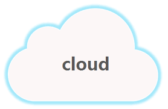
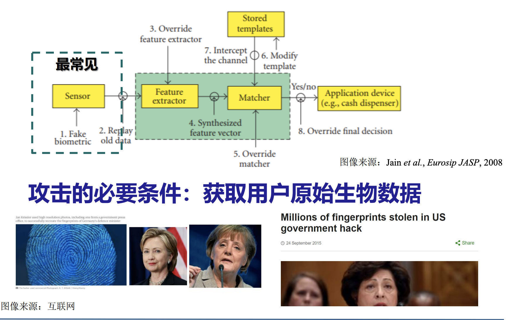
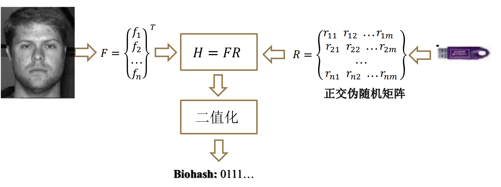
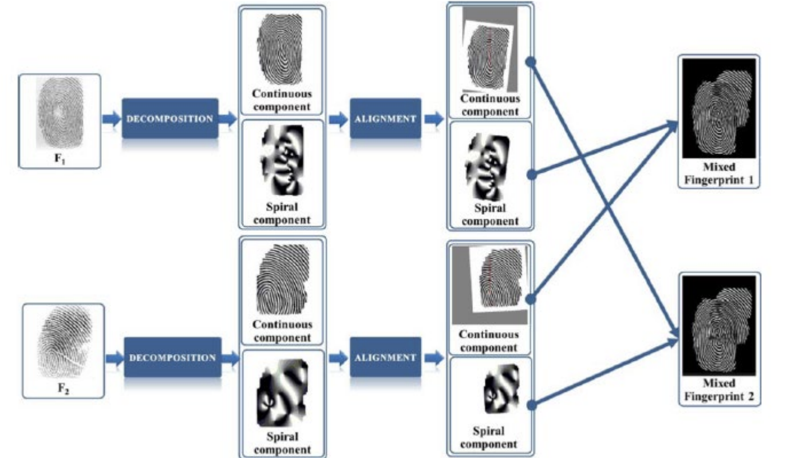
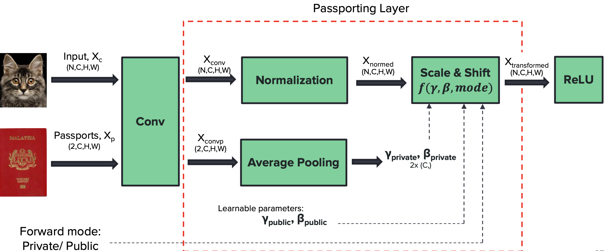

大数据的发展意味着人们以前觉得没有用的数据在如今强大的数据分析能力下成为了非常有价值，需要被保护的数据，也就意味着，和过去相比，我们需要保护的数据更多，因此数据保护的压力更大。

我们的数据，从过去写在纸上，到存到接入网络的电脑硬盘中，再到存到云服务上，我们逐渐失去对数据的掌握权（包括这次展示的ppt也是云端ppt的一次小尝试）
从过去的手动输入密码到现在的人脸识别等等等等，人们享受这便捷的同时，注定意味着更不安全的访问方式。
撞库攻击是指攻击者利用已泄漏的信息猜测用户的其他信息的攻击手段
1，存储密码时加盐哈希
2，识别撞库行为（ip，用户交互行为）

对录入的生物数据进行hash存储，体现此思想的方案包括：可撤销生物模版，生物数据密钥 
对录入的生物信息进行隐藏和混淆，体现此思路的方案包括：指纹合成

保护版权，抵抗拷贝和魔改
明水印：明面，直接使用图像嵌入
暗水印：
1，pdf头文件（易攻击）
2，微调行间距（难攻击）
1，空间域水印：
选N个图像点：增加或降低其亮度
2，变化域水印：
随机选择图像的一些分块，在中频上改变三元组隐藏信息(需添加图片)
可传递的数字水印
基本思想：一个文件每一次经过一台新的机器，都会自动记录该机器的ip,mac等特征信息，加入到自己已有的水印中去，从而在取证阶段完成一整套的流程分析
神经网络水印保护
